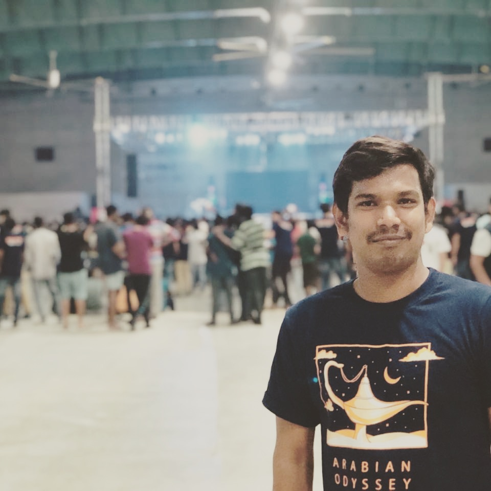

About Me
My Name - Shekhar M Samudre

Education- Bachelors in Mechanical Engineering (Pune University)
Mtech (IIT Bombay)
Hobbies- Cricket, Movies, Singing, Sleeping.
Ambitions- I wanted to use my knowledge & tools which I learned to serve the society, Wanted to ride alone on the roads of Ladakh.
Skills- Python, Machine Learning, SQL, GIS, Advanced Image Pricessing Tools, STATA, MATLAB.
Its been Awsome journey so far. I have neverv imagined that i would become the part of IIT Bombay.
As I comes from rural background, learning in this insti is like dream.